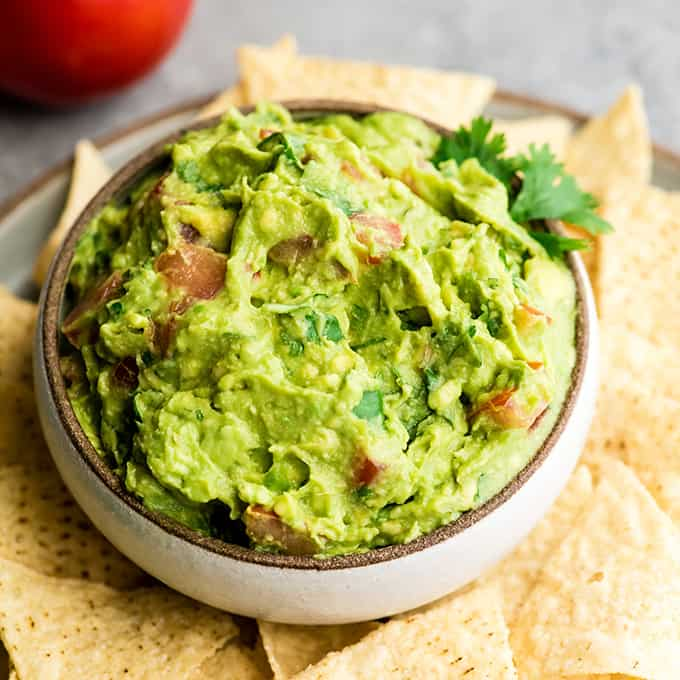

Guacamole

Description
This Homemade Guacamole has the perfect texture and combination of flavors, with chunky mashed avocados mixed with fresh lime juice, jalapeno, white onion, tomatoes, and cilantro.
Learn how to make this delicious, homemade, and authentic Guacamole recipe with simple ingredients that my Abuela taught me how to make when I was growing up in Mexico.
Ingredients
- Ripe avocados
- White onion
- Jalapeno
- Tomato
- Cilantro
- Lime juice
- Salt
Steps
- Cut the avocados in half and remove the pits.
- Scoop the avocado flesh out into a bowl, and mash the avocado with a fork, leaving plenty of chunky, unmashed bits of avocado.
- Add the tomato, onion, jalapeno, lime juice, and salt, then gently stir to combine.
- Gently fold in the cilantro.
- Taste the guacamole and adjust to your tastes (you may desire more salt, or more acidity), then serve. Enjoy!